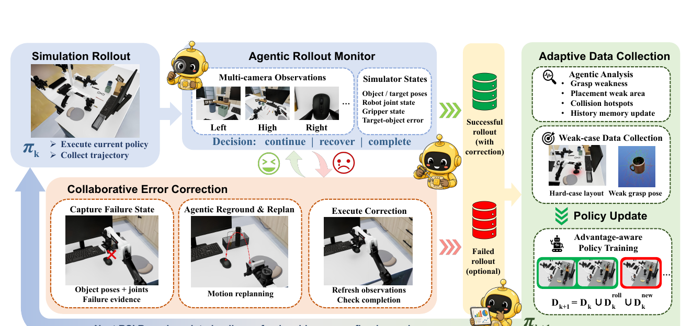
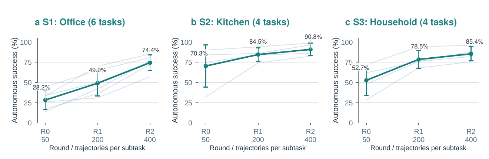
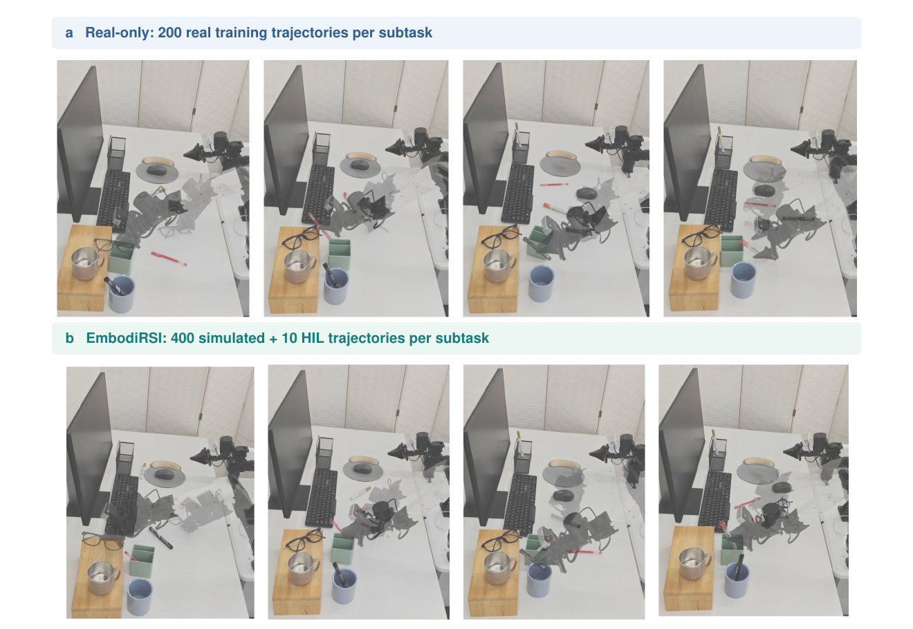

Academic Paper Analysis · 2026
EmbodiRSI：让机器人改进的不只是策略，还有下一轮经验
1. 研究背景与动机
通用视觉—语言—动作策略已经能覆盖多种操作任务，但“会做很多事”并不等于“换到新桌面仍可靠”。部署环境中的物体外观、抓取姿态、目标容器几何形状和相机视角都会改变错误分布；更关键的是，策略经过一次训练后，原先的弱点可能消失，剩余错误又会集中到新的状态区域。因此，适应过程不能只依赖一次性采集的固定数据集。
既有路线大致解决了问题的不同切面。Real2Sim2Real 方法把真实场景搬入仿真，以降低物理数据成本；DAgger、干预学习与恢复方法把学习者诱导出的状态纳入监督；自改进系统则尝试让策略利用自身执行经验继续训练。然而，单独扩充仿真数据并不会自动把预算投向当前弱点，单独处理一次失败也不等于改善下一轮的数据分布。EmbodiRSI 的切入点是把两种反馈组织进同一个递归闭环。
论文所问的问题可以更精确地表述为：当前策略的执行反馈，能否同时决定失败后从哪里继续，以及下一轮应该采集什么经验？第一个问题发生在单条轨迹内部，第二个问题发生在多条轨迹之间。前者需要状态条件化的恢复，后者需要根据失败统计重分配采集概率。
“experience distribution evolves together with the policy”原论文 Section 1
这句表述揭示了本文的真正对象：论文并未提出一种全新的 VLA 骨干或优化目标，而是提出一个让经验分布随策略共同演化的系统。其递归性体现为“策略产生新证据—证据改变经验—经验更新策略”，不是模型自行修改网络结构或学习算法。
任务特定仿真（task-specific simulation）在这里也不只是生成初始数据的工具。它被保留为长期工作区，承担可重复复位、策略评估、失败诊断、纠正轨迹生成和弱区重采样。最终回到物理世界时，系统只采集少量人类在环轨迹，重点修正仿真难以覆盖的接触与落点误差。
2. 方法详解
在第 $k$ 轮，系统维护场景策略 $\pi_k$、累积仿真数据集 $D_k$ 和任务配置采样分布 $p_k(c)$。配置 $c$ 包含源物体、目标锚点、语言指令、抓取与路径程序，以及允许的复位范围。每个场景训练一个共享策略，而非每个子任务单独训练。整体流程对应原论文 Fig. 1、Fig. 2 与 Algorithm 1。

2.1 可执行的 Real2Sim 工作区
输入是一张目标桌面图像，以及可选的目标图或语言目标。场景代理先识别桌面与可动物体，调用 SAM 3 得到实例掩码，再用 SAM 3D 重建带纹理网格。初始场景可写成 $S_0=\{o_T,o_1,\ldots,o_N\}$，其中物体 $o_i=(c_i,m_i,T_i^0)$ 分别记录语义类别、网格和初始位姿。对象身份贯穿渲染、几何检查和机器人程序，避免语言指令与仿真实体失配。
重建网格常出现穿插。论文的 Agent-Guided Adaptive Collision Rectification 先按支撑关系分组，再在组间做平面分离、组内按“同一支撑面、包含或插入”等关系选择水平移动、竖直调整或有限倾斜。语义代理决定应采用哪类修正，碰撞与支撑检查负责验证结果。这里的关键不是让 VLM 代替几何，而是让语义推理选择几何算子。
随后，场景代理根据初始图、目标图或语言要求建立 on-top-of、inside、beside 等粗关系，并用多视角渲染迭代细化位姿，得到组织后的目标场景 $S_{\mathrm{org}}$。$S_0$ 与 $S_{\mathrm{org}}$ 的差异定义了操作目标。原论文 Fig. B.1 展示了从重建、支撑感知纠碰撞到目标布局验证的完整链条。
2.2 从物体路径到可执行演示
轨迹代理把场景对与指令编译为任务配置库、被接受的演示和验证证据。它先在物体空间提出 lift、bypass 与 pre-placement 路径，再将路径投影到 GraspGen 给出的候选抓取上。若物体初始位姿为 $T_{o_i}^{0}$，初始抓取位姿为 $T_{g,i}^{0}$，则物体到夹爪的相对变换为：
直观：先保存“夹爪相对物体怎么抓”，物体沿路径移动时即可同步搬运抓取姿态，不必为每个候选抓取重新生成语义路径。
候选程序需依次通过携物全网格扫掠碰撞、多视角审查、cuRobo 顺序运动可行性和执行时任务检查。每段运动从上一段终止关节状态开始规划，失败候选先收缩路径，再在首个不可行航点附近做有界位姿搜索；只有完整通过释放后撤的程序才进入数据集。论文用一个合取式表达准入条件：
直观：文本上“看起来合理”的路线不算演示；几何、视觉、运动规划与实际执行四关全部通过，才成为监督数据。
2.3 Agentic Rollout Monitor：把执行变成结构化证据
策略 rollout 记为 $\tau^{\pi_k}=\{(o_t,x_t,a_t)\}_{t=1}^{T}$，其中 $o_t$ 是多相机观测，$x_t$ 是仿真中的物体与机器人状态，$a_t$ 是动作。监控代理根据时间窗口、状态、动作历史和指令 $l$ 做三分类：
直观：监控器不直接控制策略，而是把执行过程标记为继续、需要恢复或已经完成。视觉信号负责识别漏抓、滑落和错放，程序化检查负责目标—物体误差与夹爪状态。
恢复触发还受置信度、冷却时间、尝试预算和持物检测约束，以免在有效搬运中误打断策略。仿真真值只服务于采集期的诊断与验证，并不是学习策略的输入；最终评估关闭代理接管、规划恢复和人工纠正。
2.4 Collaborative Error Correction：从策略真正到达的状态继续
传统干净演示从标准初态开始，无法覆盖漏抓或碰撞后产生的尴尬中间状态。协作式错误纠正（CEC）在时刻 $t_f$ 捕获失败状态，把名义抓取从初始物体位姿运输到当前物体位姿：
直观：不是把世界复位后重演，而是把原抓取关系重新锚定到眼前已经被推歪或漏抓的物体上，再从当前关节状态规划进入动作。
“not replay a clean demonstration”原论文 Section 3.3.2
诊断与规划时仿真暂停，候选配置按确定顺序探测且不推进物理状态；纠正后刷新观测并重新检查完成条件。成功的“策略动作 + 纠正动作”轨迹保留了学习者诱导状态中的监督，失败请求、实际执行的纠正和最终结果则分别记录，避免把“请求了恢复”误当作“恢复成功”。外部纠正只用于训练采集，测试时出现的再次尝试必须由策略自身学得。
2.5 Adaptive Data Collection：让下一批数据对准当前弱区
CEC 解决单条轨迹内部的问题，自适应数据收集（ADC）则聚合多次 rollout，把最终失败归因到源物体复位、目标锚点复位或其他因素。对对象 $s$ 的复位范围 $[\ell_s,h_s]$，系统先把位置归一化到公共网格，再计算网格 $b$ 的归因失败率：
直观：$N_{k,b}^{s}$ 是该格子里完成监控的有效回合数，$U_{k,b}^{s}$ 只统计确实归因到对象 $s$ 的最终失败；恢复后成功的回合不会进入分子。
只有观察量与失败数足够、且格子失败率高于对象全局失败率时，才把该区域标为弱区，并映射回世界坐标限制下一轮复位范围。新的采样分布是基础分布与困难分布的混合：
直观：$\alpha$ 控制采样向当前难例倾斜的强度；当 $\alpha<1$ 时仍保留原始覆盖，避免训练数据完全塌缩到少数失败格子。测试复位分布保持不变，因此增益不能由“测试变简单”解释。
2.6 累积更新与 advantage-conditioned learning
第 $k$ 轮保留的 rollout 派生轨迹为 $D_k^{\mathrm{roll}}$，在新分布下生成并验证的演示为 $D_k^{\mathrm{new}}$。数据只增不减：
直观：策略每轮都在此前经验、失败状态中的成功续接和新采困难演示的并集上继续训练；每个保存回合只计一次。
策略输入包括头部与腕部 RGB、14 维双臂机器人状态和指令。沿用 RECAP 风格，任务条件价值模型以 $n=50$ 的跨度给经验打二元优势标签：
实现中 $R_t^{(n)}=0$，所以标签反映未来状态相对当前状态的价值变化。动作仍是行为克隆的监督目标，优势标签以文本条件输入：
直观：RSI 的创新主要发生在“什么经验进入下一轮”，训练器本身仍是带优势条件的行为克隆。更新后的 $\pi_{k+1}$ 再去 rollout，产生新的失败证据，闭合递归。
3. 实验分析
3.1 设置与比较边界
实验使用 14-DoF 双臂 ALOHA，观测由两个腕部相机和一个头部相机构成。三组真实—仿真配对场景分别是 Office Table（S1，6 个子任务）、Kitchen Table（S2，4 个）和 Household Table（S3，4 个），合计 14 个子任务。策略从 $\pi_{0.5}$ 预训练检查点初始化，每个场景共享一个策略。代理系统基于 GPT-5.5，仿真平台为 Isaac Sim。
R0、R1、R2 的累计保留仿真轨迹分别为每子任务 50、200、400 条。R1 新增 100 条生成演示与 50 条 rollout 派生轨迹；R2 再新增各 100 条。论文只保留最终完成任务的训练轨迹，未成功的监控 rollout 仅用于失败归因和定向采集。真实评估每个子任务、每个设置进行 10 次自主测试；所有测试均关闭外部恢复。
3.2 递归轮次是否真的持续提高策略？

场景平衡的仿真成功率从 R0 的 50.4% 上升到 R1 的 70.7%，再到 R2 的 83.5%。三场景均单调上升，但起点和剩余空间不同：Kitchen 从 70.3% 提升到 90.8%，而更困难的 Office 从 28.2% 提升到 74.4%。所有 14 个子任务从 R0 到 R2 都有改善，其中黑笔放入笔筒由 14.0% 提升到 76.5%。这说明趋势并非由单一容易任务拉动。
| 场景 | 任务数 | R0 / 50 | R1 / 200 | R2 / 400 | R0→R2 |
|---|---|---|---|---|---|
| S1 Office | 6 | 28.2% | 49.0% | 74.4% | +46.2 pp |
| S2 Kitchen | 4 | 70.3% | 84.5% | 90.8% | +20.5 pp |
| S3 Household | 4 | 52.7% | 78.5% | 85.4% | +32.7 pp |
| 场景平衡均值 | 14 | 50.4% | 70.7% | 83.5% | +33.1 pp |
不过，R0/R1/R2 同时增加了数据量，因此这组曲线本身只能证明“整个递归流程随轮次改善”，不能单独证明反馈采集优于普通扩量。论文用等轨迹数的 Static 对照回答后一问题。
3.3 等数据预算下，反馈是否有额外价值？
在初始化最困难的 S1 与 S3 上，Static 和 EmbodiRSI 从相同的 50 条/子任务初始演示出发，使用相同架构与训练配方，并在累计 200 和 400 条时比较。Static 始终从原始配置分布采演示；EmbodiRSI 则混合 rollout 派生经验和定向重采。400 条时，自适应方法的场景平衡仿真成功率为 79.9%，Static 为 59.3%，差 20.6 个百分点；这才是论文关于反馈驱动采集最直接的证据。
| 400 条仿真轨迹/子任务 | Static | EmbodiRSI | 增益 |
|---|---|---|---|
| 自主仿真成功率（S1/S3 场景平衡） | 59.3% | 79.9% | +20.6 pp |
| R2S2R，真实零样本 | 46.3% | 59.2% | +12.9 pp |
| R2S2R + 每任务 10 条 HIL | 67.9% | 82.1% | +14.2 pp |
增益在真实部署中仍保留：物理微调前 +12.9 pp，双方都加 10 条 HIL 后为 +14.2 pp。这支持“仿真中学到的不是只对仿真有利的捷径”。但任务级结果不是全胜：S3 的 pencil-case 任务上，Static 在 200 与 400 条时分别以 94.8% 对 94.0%、97.2% 对 96.0% 略高。论文因此证明的是总体预算效率，而不是每个任务必然受益。
3.4 少量真实纠正能否胜过大量真实演示？
完整三场景结果中，R2 在不做任务特定真实微调时已达到 62.8%；每个子任务增加 10 条真实 HIL 后达到 83.1%。Real-only 200 使用每个子任务 200 条真实演示，成功率为 75.0%。从保留的物理训练轨迹数看，EmbodiRSI 只用其 $1/20$，场景平衡均值反而高 8.1 pp。
| 训练设置 | S1 Office | S2 Kitchen | S3 Household | 场景平衡 |
|---|---|---|---|---|
| R2：400 sim | 53.3% | 70.0% | 65.0% | 62.8% |
| R2+10：400 sim + 10 HIL | 81.7% | 85.0% | 82.5% | 83.1% |
| Real-only 10 | 13.3% | 45.0% | 20.0% | 26.1% |
| Real-only 100 | 56.7% | 62.5% | 52.5% | 57.2% |
| Real-only 200 | 70.0% | 77.5% | 77.5% | 75.0% |
HIL 的作用更像“局部校准”而非从头教授任务。仿真策略通常已能接近正确物体，剩余失败集中在抓取对齐、滑落和狭窄目标的最终放置。例如 S1 红笔任务在 R2 零样本时仍是 2/10，加入 10 条 HIL 后变为 7/10；而眼镜任务在微调前已是 10/10。广域接近动作主要来自仿真，局部接触调整更多来自真实纠正。

4. 讨论：这项工作的真正边界
第一，EmbodiRSI 是经验获取系统，而不是新策略架构。它的核心价值在于把场景构建、可执行演示、监控、恢复、失败归因和策略更新串成持久闭环。优势条件行为克隆、GraspGen、cuRobo、SAM 3/SAM 3D 等都是可替换组件。因而更合理的迁移方向，是把同一闭环接到其他 VLA 或控制策略上，而不是把结果归因于某个单一骨干。
第二，两种反馈覆盖不同时间尺度。CEC 纠正学习者诱导状态中的局部支持缺口，ADC 调整跨回合的配置覆盖。如果只有 CEC，策略可能反复修同类错误，却不主动增加困难配置；如果只有 ADC，新演示仍可能从干净初态开始，无法教会策略处理自己造成的中间状态。两者互补是系统设计最有说服力的部分，但论文尚未用组件消融定量分离它们。
第三，数据效率不等于总成本效率。论文匹配的是“保留轨迹数”，不是生成尝试次数、VLM 调用量、仿真时长、GPU 训练成本或场景重建的人力与算力。EmbodiRSI 显著减少昂贵物理轨迹，这对机器人实验很重要；但若用于工程决策，还需报告每条被接受轨迹背后的拒绝率、代理调用成本与端到端墙钟时间。
第四，当前 RSI 是预设轮数下的数据递归。轮数和数据配额预先固定，系统没有自动决定何时继续、停止或扩大预算，也没有修改学习算法本身。所谓 recursive self-improvement 应理解为策略与经验分布交替更新，而非无限自主提升。
5. 局限分析
5.1 作者明确承认的局限
作者指出，受时间和算力限制，评估集中于三个指定工作区的场景特定适应；尚未在未见工作区上检验泛化，也未运行更长的改进链来验证持续提升。其次，实验以完整流水线为主，没有对恢复、重采和代理推理做系统组件消融，因此无法从现有结果估计 CEC 与 ADC 各自贡献多少，或两者是否存在超加性协同。
“will be released soon”原论文 Reproducibility Statement；当前仍无可核验实现
代码尚未公开，使场景编译、恢复门控、失败归因提示词、超参数 $\alpha$ 与阈值选择都无法独立复现。论文虽给出较完整的系统描述，但复现复杂 agentic pipeline 依赖大量实现细节；现阶段结果只能依据论文报告核验，不能进行源码级复查。
5.2 独立判断
最重要的证据缺口是训练重复性。每个场景的子任务共享同一个策略，表中子任务并非独立训练重复；不同方法之间也没有多个随机种子。真实测试每任务只有 10 次，8.1 pp 的总体差距可能对少量成败翻转敏感。Fig. E.1 给出任务级 Wilson 区间是积极做法，但仍不能替代策略训练层面的重复实验。
第二，失败归因是启发式的。ADC 用网格化位置和 VLM 支持的归因判断弱区，统计量 $r_{k,b}^s$ 衡量的是失败集中度，不是该配置的预期学习收益。某格子失败多，可能因为本质不可达、重建误差或规划器偏差；把数据继续投向这里不一定最划算。论文也明确将其称为 acquisition heuristic。
第三，系统仍依赖较强的部署特定先验：目标工作区被重建、对象身份被维护、复位范围与任务目标可被结构化表示。对可变形物体、动态干扰、长时多阶段任务或无法可靠重建的场景，当前的网格归因和任务相对航点未必适用。14 个任务均属于桌面取放，这支持场景内适应结论，但不足以证明对开放世界操作的普适性。
第四，真实数据比较的语义并不完全相同。Real-only 使用标准演示，HIL 数据是建立在已经具备能力的策略上的局部纠正；二者每条轨迹的信息密度与采集交互方式不同。因此“10 条 HIL 对 200 条演示”可以说明物理轨迹数量节省，却不能直接推导采集时间、操作员负担或成本也严格节省 20 倍。
6. 结论
EmbodiRSI 的核心贡献不是让模型凭空产生更强能力，而是把失败转化为两种可执行决策：在当前失败状态上生成纠正监督，以及把下一批演示送往反复暴露的弱区。任务特定仿真因此从一次性数据工厂变成持续的练习、诊断和采集空间。
在三场景 14 个子任务上，论文展示了跨 RSI 轮次的连续提升、等保留轨迹数下相对静态采集的优势，以及 400 条仿真轨迹配合每任务 10 条真实 HIL 达到 83.1% 的场景平衡真实成功率。结论成立的范围是“部署特定桌面取放、固定预算、单次训练结果”；未来最需要补充的是组件消融、多种子统计、完整成本核算、未见场景泛化和公开代码。
来源与说明
本文依据 arXiv v3 PDF 全文（含附录 A–F）整理。原论文图像仅裁剪保留与相邻论点直接相关的区域；数值表依据原论文 Table 1、Table 2、Table E.1、Table E.3–E.5 重排。检索日期：2026-10-13。